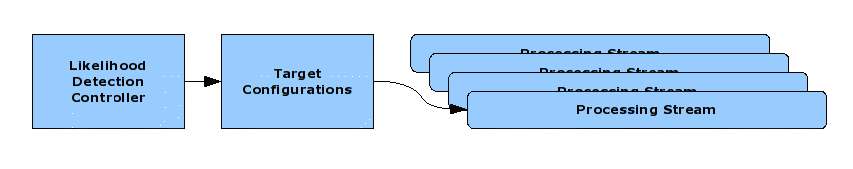

Likelihood Detector Parameters Dialog

The likelihood detector module is an implementation of a likelihood ratio test. It is suitable for detecting both short duration Odontocete clicks (Sperm, Beaked, etc.) as well as moderate duration Mysticete calls (Humpback, Bowhead, etc.). It is not suitable for detecting whistles; for more information on whistle detection see the Whistle Detector Module.
The Likelihood Detector allows for the custom configuration of one or more target profiles. Each target profile configuration allows the operator to specifiy a series of parameters that identify the characteristics of the signal to be detected.
|
|
For each target configuration, the Likelihood module will create a processing stream composed of various processes which carry out the detection procedure. There is no limit to the number of target configurations that may be prepared, however additional hardware and software performance will be consumed for each processing stream.
|  |
The data flow begins with an audio data source (i.e., a Sound Acquisition module), and the Likelihood Detection Module requires an audio data source to be configured in order to operate. From there, raw audio data goes through several stages of processing, each with its dedicated process, before the processing stream emits detections. The stages are as follows:
FFT Processing
When a target configuration is created, the first thing the Likelihood
Detection Module does is calculate the actual FFT parameters required based on
the operator's suggestions for the frequency and time resolutions and the
audio data source's parameters.
The module will then seek an existing
FFT data block within the PAMGUARD system that has those parameters and is
also for the same configured audio source. If a matching FFT process is not
located, an FFT process is automatically created within the Likelihood
Detection Module, and becomes the first step in the processing stream for
the target configuration. The output of this stage of processing is a standard
PAMGUARD FFT data block (i.e., RecyclingDataBlock<FFTDataUnit>).
Linear Average Spectra Processing
This process computes the average band energy for all of a target configuration's
bands by averaging the FFT magnitude between the start and end frequencies for
that band. The output of this stage of processing is a
PamDataBlock<AverageSpectraDataUnit>.
Spectral ETI Processing
This process computes the average band energy for all of the bands in a target
configuration by averaging the FFT magnitude between the minimum (start) and
maximum (end) frequencies for the bands.
The output of this stage of processing is a
PamDataBlock<SpectralEtiDataUnit>.
Normalization Processing
The normalizer process computes a signal and noise window estimate based on the
configured normalization algorithm (i.e., either decaying average or
block average) and the configured signal and window lengths.
The output of this stage of processing is a
PamDataBlock<NormalizedDataUnit>.
Threshold Detection Processing
The detection process computes the actual likelihood ration test (LRT)
portion of the detection process. This algorithm does two tests: first, for any
given signal band, if the likelihood ration is greater than the user defined
threshold, then a detection may be present. Second, if defined, and there may be a detection
present, the detector divides the signal estimate of the signal-band by the average
signal estimate af all of the associated guard bands. If that ratio is
greater than the user-defined threshold, then a detection results.
The output of this stage of processing is zero to many
ThresholdDetectorDataUnit, which is an extension of the standard
PAMGUARD PamDetection<> class.

|